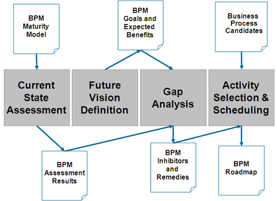

OUM |
Business Process Management (BPM) Supplemental Guide |
||
Method Navigation |
Current Page Navigation |
||
|
|
||||||||
A Business Process Management (BPM) Roadmap provides the guidance to successfully adopt a business process oriented approach to building IT solutions to support the business. A well constructed BPM Roadmap defines projects that incrementally deliver BPM and provide business value at each step while minimizing the risks associated with BPM adoption. To build such a roadmap requires a solid understanding of the current situation with respect to BPM, a clear vision of what the BPM initiative needs to accomplish to be successful, and a structured approach to defining the iterations that comprise the path to successful BPM adoption.
This BPM Roadmap view is intended to show how to conduct an engagement using OUM to create a BPM Roadmap based on the BPM Roadmap described in the IT Strategies from Oracle (ITSO) guidelines and reference architectures library, Creating a BPM Roadmap. Refer to the Supplemental Guidance page for further information on the IT Strategies from Oracle (ITSO) web site.
This view is useful as follows:
The main objective of this view is to minimize the gap between BPM Roadmap engagements and subsequent implementation projects.
A BPM Roadmap provides guidance to the BPM initiative allowing multiple projects to progress in parallel yet remain coordinated. This approach ultimately results in a common end goal that provides value greater than the sum of the individual projects. The BPM Roadmap consists of two fundamental parts:
The relationship for these two fundamental parts within OUM is illustrated in the figure below:

The program-level efforts create the assets that are leveraged across all the individual projects. Examples include the BPM Reference Architecture, governance policies and processes, standards, metrics, training and mentoring, business process engineering method, etc. The program level efforts provide and enforce the necessary consistency required to succeed at BPM adoption. A delicate balance needs to be struck between too little control and too much control. With too little control BPM adoption will be haphazard at best.
For most companies it is advantageous to separate the business process infrastructure deployment and configuration into a separate project from the business solution projects. This allows the infrastructure project to focus on creating a sound business process infrastructure that meets the needs of multiple business solution projects. There will likely be an infrastructure project for each phase of the BPM Roadmap to incrementally deploy the process infrastructure. The business process to be managed by the BPM system typically already exists as the creation of an entirely new process is an unusual case, so the activities, both human and system, already exist in some form. The challenge for a BPM project is how to integrate these activities.
In many cases, application functions (and human workflows within them) are found in vertical applications, information in data silos with human tasks tying them together. In an ideal scenario, a repository of SOA Services will be available for rapid and flexible integration. In cases of other integration strategies (e.g. EAI), more effort is needed to identify and integrate application functions. Human work lists can be managed with portal interfaces and potentially integrated directly with the applications.
However, the initial procedure for placing a business process under the control of a BPM system should not involve significant development of new functions or system replacement of human tasks. Instead, the effort should focus on identifying the human and system functions that make up the steps of the business process and assessing their integration needs. This assessment of integration effort should be performed at the earliest possible stage of planning in order to:
Generally, the most effective planning horizon for a BPM Roadmap is 2-3 years. This could be longer or shorter depending on the planning cycles for each organization. The initial phases (e.g., first six months) of the roadmap contain much greater detail than the later phases. This is appropriate and by design. The BPM journey is a journey of discovery, incremental improvement, and regular course corrections. The BPM Roadmap should be regularly reviewed and updated. The business never stays static, so do not expect the BPM Roadmap to remain static either.
The BPM Roadmap Creation Process

There are four areas in the BPM Roadmap view, each with its own set of tasks.
The areas in the BPM Roadmap follow the standard four steps used within the industry to create roadmaps, i.e., establish the current state, define the future vision, analyze the gap, and define the phases and schedule of the roadmap. It is the particulars within each step of the overall process that provide the uniqueness and value of the approach.
CURRENT STATE ASSESSMENT – The current state is measured based on the Oracle BPM Maturity Model. Using this approach to assess the current state of the BPM initiative provides a consistent measurement scale while keeping the effort focused on capabilities important to BPM success and avoiding the scope creep that frequently undermines current state evaluation efforts. Additional guidance on Current State Assessment can be found in the BPM Roadmap Task Guidelines.
FUTURE VISION DEFINITION – The Future Vision Definition is used to establish the high-level goal and reason for the BPM program. While a fully fleshed out future vision is needed eventually, the initial roadmap creation only requires the high-level vision since the development of the detailed vision can itself be part of the BPM Roadmap. Of course, if the current state of the BPM initiative includes a more detailed future vision, that vision can be leveraged when creating the roadmap. Additional guidance on Future Vision Definition can be found in the BPM Roadmap Task Guidelines.
GAP ANALYSIS – The Gap Analysis evaluates the gap between the current state and the future vision for each of the capabilities. Generally, the capabilities exhibiting the largest gap are given highest priority during the roadmap creation. However, part of Gap Analysis also includes evaluating the relative importance for each of the capabilities for the particular organization. Size, organizational structure, existing assets, funding priorities, even politics can significantly impact the relative importance of capabilities. Additional guidance on Gap Analysis can be found in the BPM Roadmap Task Guidelines.
ACTIVITY SELECTION AND SCHEDULING – Finally, we have Activity Selection and Scheduling that uses the output from the Gap Analysis to create a logical ordering for the work to be done. Emphasis is placed on the program-level efforts for the initial phases to establish the assets and processes used across projects. Candidate business processes are evaluated for BPM applicability and are then prioritized based on that evaluation. The project portfolio is derived from the needs of the business processes selected for automation. Additional guidance on Activity Selection and Scheduling can be found in the BPM Roadmap Task Guidelines.
Refer to the SOA in OUM page for access as well as descriptions for all the SOA views in OUM.
Refer to the Supplemental Guidance page for further information on the IT Strategies from Oracle (ITSO) web site.
The ITSO BPM Roadmap has been mapped to the Envision focus area of Oracle Unified Method to help show which tasks would typically be performed during each of the four areas, from Current State Assessment to Activity Selection and Scheduling.
See the mapping document and BPM Roadmap view for applicable OUM tasks.

Copyright © 2006, 2016, Oracle and/or its affiliates. All rights reserved.